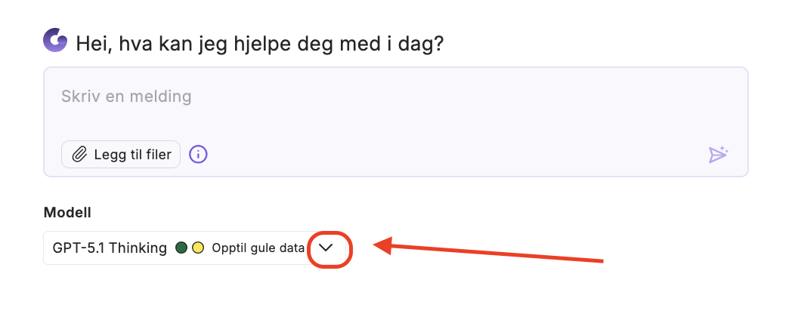
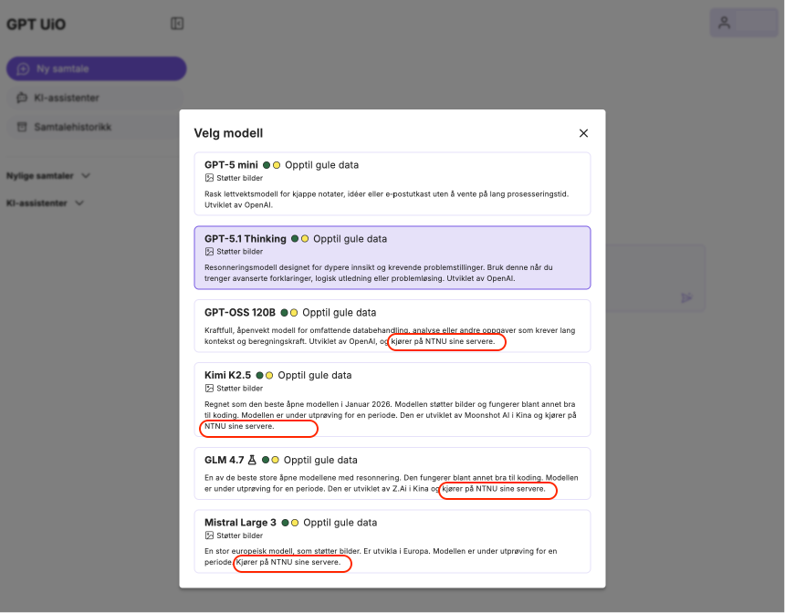

GPT UiO: hvilken modell skal du velge?
De lokale språkmodellen er gode, men de er mye mindre enn de som kjører i skyen. Det betyr at om oppgaven du skal løse er veldig kompleks, så kan det være at du får bedre kvalitet om du velger en sky-modell.
Vi foreslår at du prøver ut forskjellige modeller, og om du kan nøye deg med en mindre og lokal modell, så velg denne. Den bruker totalt sett mindre ressurser, slik som strøm, enn de store modellene i skyen.
Noen relevante spørsmål som kan hjelpe deg med å velge modell:
- Er svaret godt nok med en mindre modell? Bra, gå for den mindre modellen og spar ressurser!
- Ikke god nok kvalitet på svaret? Bytt fra en mindre lokal modell til en større skymodell.
- Trenger du ekstra beskyttelse på dataene dine? Velg en lokal modell som støtter opp til røde data.
- Skal du behandle bilder i tillegg til tekst? Velg en modell som støtter bilder.
Fordypning for de nysgjerrige
Velge en annen modell enn standard
{kind=link}

Klikk på nedover-pilen for å se hvilke språkmodeller du kan velge mellom
Eksempel på språkmodeller i GPT UiO
{kind=link}

Her ser du listen over de forskjellige språkmodellen som GPT UiO tilbyr. Listen oppdateres når nye modeller eller versjoner blir tilgjengelig. De røde boksene viser at noen av modellene kjører lokalt på NTNU. De andre kjører i Microsoft Azure skyen.